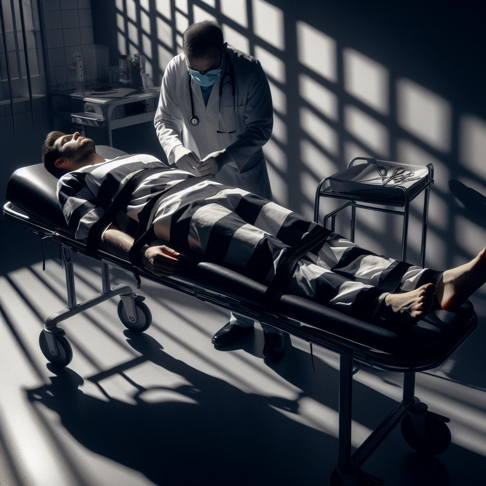
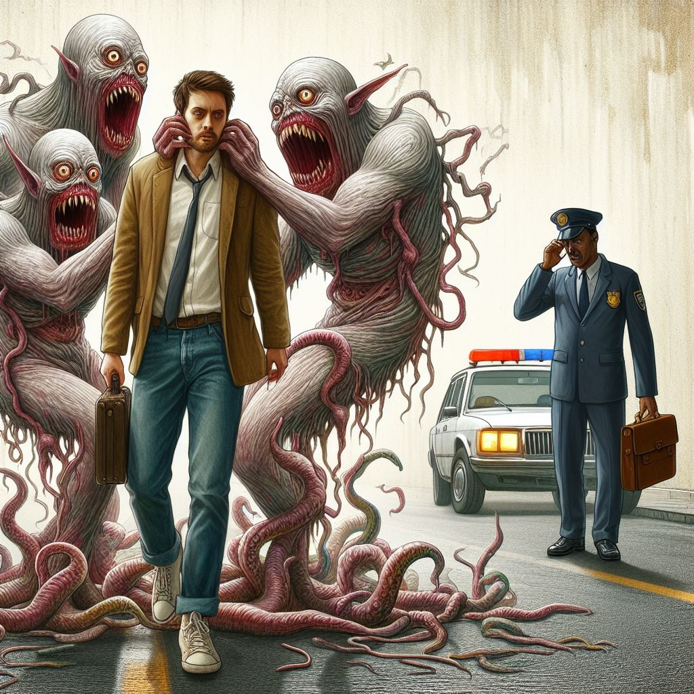

¿Por que? - Descenso a la locura
Prologo
En este cuento de diez capitulos van a conocer la historia de un hombre que por sus desiciones, descendio a la locura. hechos que si bien se pudieron haber evitado, lo pusieron contra la espada y la pared a cada instante, el no haber actuado lo habria destrozado en muchas formas. Y es por eso que te pregunto, querido lector, ¿que hubieses hecho tu?
¿Ya leiste el Capitulo 1?, Hace click y empezá el Capitulo 2
Capitulo 1
Desperté en la celda de una comisaría de quien sabe qué lugar, pues no recordaba nada de lo que había pasado la noche anterior. Con los ojos aún nublados, perdidos y apenas pudiendo ponerme de pie observé mis manos bañadas en sangre seca, las lágrimas comenzaron a brotar lentamente de mis ojos cuando empecé a recordar y tuve que apoyarme contra el paredón para mantenerme de pie. “me encontraba con mis amigos, habíamos salido de una fiesta muy concurrida, era tarde y ya los autobuses no pasaban, los taxis estaban a unas cuantas cuadras así que habíamos decidido caminar. Lo hicimos por unos minutos hasta ver a una chica despedirse de su amiga para seguir sola su caminar justo delante nuestro, hacia la misma dirección en la que nosotros íbamos. Mis amigos habían tomado mucho además de las drogas que habían consumido quizás fue por ello que al notar la belleza de la chica, decidieron comenzar a gritarle cosas de su vestimenta un poco osada, la caminata de mis amigos se hizo más rápida, al igual que la de ella, intenté frenarlos, pero……solo los seguí.” Hasta ahí había podido recordar, y por las miradas de los maleantes a mi alrededor había estado ausente de la realidad unos pocos minutos, luego de recordar, la incertidumbre y el miedo eran terribles en mí y mis pensamientos fueron los peores, ¿Qué le había sucedido a esa chica y que había hecho yo para estar allí? quizás la única respuesta sincera en ese momento eran las de mis manos, la sangre seca. Sin atreverme a mirar hacia los costados por el terror de lo que me pudieran hacer mis amenazantes ahora compañeros de celda, me acerqué al guardia que estaba más cerca y le pregunté con desesperación y llanto -¿Qué sucedió?- a lo que respondió solo con una tosca mirada para luego voltearse e irse, pero mientras se retiraba pude ver como volteaba y soltaba una siniestra sonrisa hacia mí. Los minutos pasaban y no había respuestas, parecía que los guardias vigilaban por las cámaras porque no había aparecido ninguno desde hacía unos minutos cuando se retiró el anterior. En ese momento oí gritos tras la puerta que aparentemente daba a la sala principal de la comisaría, varias personas mayores gritaban desconsoladas, para cuando me acerqué a los barrotes ya los habían callado, solo pude lograr comprender dos palabras juntas “mi hija”. “la muchacha dobló en una esquina intentando evadirnos pero eso solo empeoró las cosas, pues era un lugar completamente desolado que claramente no conocía y muy cerca de un terreno abandonado junto a las vías del tren, mis amigos, Juan y Ariel se acercaron repitiendo insultos y groserías “seguro que te gusta provocar, vamos a divertirnos con vos esta noche, nadie te va a salvar” yo solo los seguí. La tomaron de los brazos y taparon su boca, yo solo pude admirar por unos cortos segundos su bello rostro angelical cubierto de su cabello rubio que parecían rizos de oro” Nuevamente había perdido los recuerdos, y cuando volví mi desesperación era fatal. Mi corazón se hacía mil pedazos dentro de mí, no podía parar de llorar a la vez que caía de rodillas al suelo y mis manos eran lo único que impedían darme de cabezazos contra el suelo, todo había quedado claro, esa chica había sido violada y asesinada por nosotros pero por alguna razón mis amigos no se encontraban en la misma celda que yo, de haberlos frenado nada de esto hubiera sucedido. Habían pasado horas y nadie daba respuestas, no sucedía nada más que el murmullo de los delincuentes a mi alrededor que me observaban algunos con miedo y otros con desprecio mientras yo en mi cabeza pensaba que ese lugar era el que ellos merecían, no el que merecía yo, nunca había violado a nadie ni mucho menos, al menos hasta la noche anterior. Al poco de unos segundos luego de unos alaridos provenientes desde el salón principal ingresó el Señor Gabriel, padre de Ariel, quien la noche anterior había tomado la iniciativa contra la muchacha, el solo se paró fuera de la celda con un inmutable rostro y allí observó por casi cinco minutos eternos, mis palabras parecían silencio absoluto ante él, pues no emitió gesto ni respondió ninguna de ellas, solo se retiró junto con los guardias después de unos minutos más. Allí estuve aferrado a los barrotes intentando contener mis pesadas lagrimas que asomaban y comenzaban a recorrer mis mejillas lentamente, a cada segundo seguía suponiendo lo peor, ¿cómo se sentía un violador, un asesino? eso era yo ahora y nada me salvaría de los horrores de la prisión, solo un suicidio o una muerte a golpes en ese mismo lugar. Las lágrimas se convirtieron en sangre cuando un ladrón de poca monta me susurró por detrás “asesino” y una nueva revelación vino a mi mente. “arrastraron a la chica hasta el terreno, junto a las vías, y entre un montón de chatarra se disponían a violarla “vamos, eres el primer afortunado” me dijo Ariel entre los llantos desconsolados de la pobre chica que intentaba acurrucarse entre los pastizales alejándose lentamente de mi cruel amigo “no te escapas hoy”, dijo Juan con una terrible y bestial sonrisa psicótica en su rostro, quien sabe que cosas pasaban en ese momento por su mente, ante mi negativa, Ariel se ponía en posición de violarla a la vez que me insultaba y burlaba mientras me daba la espalda” Volví en si de repente y solo pude pensar en voltear y comenzar a golpear primero en el estómago y luego, ya en el suelo, en la cabeza una y otra vez a aquel que me había llamado asesino, mis compañeros reclusos nos rodearon y en lugar de separarnos me alentaban “¡asesino!”, decían. En eso llegaron los guardias y bruscamente me separaron y llevaron a rastras a una sala de interrogatorios, el pasillo era largo, no me habían llevado por las oficinas quizás por miedo pero en ese trayecto tuve oportunidad de pensar. Cuan extraña, infinita y moldeable es la mente humana, aplicando los sentimientos correctos un hombre puede pasar de ser el mejor ejemplo al más ruin en poco tiempo. Me sentaron y esposaron en la mesa de interrogatorios, frente al espejo doble clásico en todas las películas que había visto de policías y acción, la única diferencia era que yo estaba solo, y así pasaron los minutos, al largo rato ingresaron varios oficiales, al frente se encontraba aquel que me había lanzado esa siniestra sonrisa hacía horas ya, con la misma expresión se paró frente a mí y detrás suyo, atravesando un haz de luz angelical una muchacha de rizos de oro, temblorosa pero en paz y sonriente, que se me acercó para darme un beso en la mejilla y decir “Gracias, nos vemos luego”, y entonces recordé. “mientras Ariel y Juan intentaban violarla ante mi negativa en mi cabeza daba vueltas una palabra que me enervaba más a cada momento desde ese instante donde comencé a repetirla con mis labios “¿por qué?”, tomé un caño oxidado que había allí y los golpeé a ambos en la cabeza hasta dejarlos inconscientes, pero al verla a ella tan indefensa, frágil y bella, solo pude gritar ¡¿POR QUÉ?! Comencé a golpearlos tantas veces como me dieron los brazos, la ira me recorría el cuerpo, miles de casos de violaciones pasaron por mi mente en ese instante, tantas mujeres violadas, tantas muertas y tantas impunidades, hoy yo podía hacer justicia, simplemente porque podía y así lo sentía. Al calmarme llamé a la policía y me senté junto a ella, la abracé hasta que llegaron los oficiales junto con la ambulancia”

“Aquel bello momento, ese beso en la mejilla había eliminado cualquier sensación de desesperación alguna. En la declaración dije todo tal cual e incluso los oficiales me felicitaban por el acto de valentía, era todo tan extraño y pasaba todo tan rápido que cuando quise darme cuenta estaba en la celda de la prisión a la espera del juicio, que sería en solo un mes.” En una esquina de mi celda me encontraba aún adolorido por los actos de “traición” que cometí hacia mis amigos según mis compañeros de la prisión, por suerte me encontraba solo en la celda y quizás esa había sido mi recompensa por aquel acto de tal valentía. Había comenzado a escribir en la pared día por día, hora por hora hasta casi perder la noción del tiempo y así habían pasado dos semanas, hasta un acto que había cambiado mi vida dentro de la prisión para las dos semanas que restaban, mientras pensaba en eso las celdas volvían a abrirse mientras que cuatro sombras se asomaban y acercaban lentamente pronunciando una palabra, “traidor”. “era mi primer recreo en la prisión, Salí al patio tranquilamente y me senté en una esquina mientras observaba a los demás jugar futbol, hacer ejercicio e incluso boxear cuando se acercó por detrás un alto y musculoso presidiario al que todos conocían simplemente como Lucas, me como por el cuello y susurro unas palabras que esa noche me darían mucho que pensar “ acá a los traidores los tratamos así, a los golpes, traicionaste a tus amigos por una mina, jajaja, sufrí”, acto seguido me lanzó hacia el suelo y el solo comenzó a darme de patadas mientras los demás observaban, incluso los guardias, me llené de odio en ese momento, la sangre parecía arder en mi cuerpo y fue entonces cuando un flash vino a mi mente, la imagen de Lucas atado a los barrotes de su celda, torturado con la sangre escurriéndose y llenando el piso de toda la celda” Allí desperté, luego de esa pesadilla, muy adolorido y justo cuando el recreo había terminado y las celdas se cerraban como si lo hiciera mi entrada al paraíso, en ese momento solo podía empezar a pensar en aquel beso y en ese hermoso rostro, era lo único que me confortaba por completo y fue allí cuando pude escuchar a dos guardias hablar de la muerte de otro convicto, uno llamado Lucas, lo habían hecho por la noche, fue amarrado a su celda mientras que era cortado con un pequeño bisturí, la sangre había cubierto toda la celda justo como en mi pesadilla, allí recordé. “los primeros días habían sido los más terribles, con tan solo ingresar mi estado psicológico había pasado de ser el de un héroe a un trágico en solo segundos, sin contar la golpiza que me habían dado, la patada en la cabeza de un hombre musculoso y fornido, Lucas. Tal fue la golpiza que acabé en la enfermería donde una enfermera algo anciana me atendía y curaba, fue entonces cuando vi el bisturí sobre la mesa, tan cerca de mi protección y mi venganza, aunque eso me costase una condena aún mayor ya estaba jugado, en prisión por haber salvado la vida de una mocosa que no supo cuidarse a sí misma, en este momento quizás hasta me arrepiento de no haberla violado, no estaría aquí, pero…..si, simplemente lo tomé sin medir las consecuencias” Desperté en la mañana, justo cuando abrían las celdas, al parecer sin darme cuenta en el momento de recordar me dormí y soñé toda la noche con lo que había sucedido en mis primeros días allí. Lo extraño y casi irreal fue que nadie se acercó a mi celda, ya contaba la tercer semana según mis cálculos y todos parecían tenerme respeto, en mi mente no había remordimientos, mi siquiera un poco, y aunque las pruebas que solo yo conocía me marcaban como el sospechoso los guardias tenían a otro, el cual ya había sido trasladado al área de castigo. En el patio dos guardias se acercaron a mí y me entregaron una carta, en ese momento pase de estar en el mismísimo infierno, en un valle de rosas secas convertidas en cenizas a estar en el mismísimo paraíso, era de ella, pero todo se vio arruinado y ni siquiera pude leerla cuando ellos mismos me dijeron, “ey, héroe, tus amiguitos Ariel y Juan fueron trasladados al hospital de la prisión, buena suerte con eso” mientras se alejaban dando carcajadas. Corrí hasta mi celda y me arrinconé allí, pensaba que habían muerto, si, y que esa había sido la razón por la que ni mi Ángel ni mis familiares habían venido a verme, pero no, ellos vivían y se encontraban graves pero en la prisión, injusticia. “nos encontrábamos nuevamente en esa calle detrás de aquella muchacha rubia, la arrastramos sin ningún quejido de los tres hasta aquel terreno desolado y lleno de chatarra, allí la violamos y la dejamos, donde nadie la encontraría” Desperté una mañana con ese sueño, la carta se encontraba destrozada a mi lado, al parecer entre sueños la había roto por la ira de la situación. El sueño fue recurrente durante varias noches, casi no podía dormir y mi único pensamiento eran mis crueles amigos, quienes se encontraban débiles a pocos metros de distancia, esperándome y quizás solo una golpiza me llevaría hasta ellos.
Estaba en mi celda cuando pude escuchar por la radio de mi compañero que una chica se había suicidado, no revelaron nombre ni localidad, solo lo habían relacionado con una violación reciente, en ese momento todo pensamiento cruel hacia Ariel o Juan se había derrumbado y había dado paso al abismo que me tragaba aún más en aquel rincón hasta perder la razón, Temiendo desesperadamente que se tratara mi bello ángel, Valentina. “Despertó en su casa aturdida luego de la salida del hospital, simplemente abrió los ojos y se encontró con una habitación oscura a medias, pues por las rendijas de la persiana ingresaba un poco de luz, la cual deformaba los objetos de su habitación en sombras que se abalanzaban sobre ella intentando tocarla, podía sentir las manos, esas cuatro manos frías tocando sus partes íntimas, desgarrando cada hilo dorado de inocencia que le quedase en el cuerpo. Esos cuatro ojos que la miraban lascivos, consumiéndola solo con la mirada y acercándose lentamente en la oscuridad hacia ella solo para notar que se trataban de ideas de su mente, después de un grito agudo su padre acudió a ella y sentándose a su lado en la cama la abrazó tan fuerte que por solo un segundo se sintió segura, cuando ingresó la madre al cuarto y observó la situación quebró en llanto a la vez que su hija volteaba y veía como el rostro de su padre se transformaba en un ser sombra sin rostro y completamente psicótico que comenzó a tocarla y a arrancarle el pijama que tenía puesto, mientras se abalanzaba sobre ella y la tocaba más y más fuerte, lastimándola como lo habían hecho aquellos dos hombres” Me despertó la sirena, teníamos que ir al patio, aturdido y tembloroso me puse de pie y sosteniéndome contra la pared caminé hasta el patio y me recosté en uno de los asientos, calmándome poco a poco pero imaginándome aquella situación, aquel sueño, ¿si realmente ella estaría pasando por ello y por eso no me visitaba? El cielo se encontraba nublado y parecía que una tormenta comenzaría pronto, el viento lo anunciaba y los relámpagos comenzaban a verse cada vez más, pero mi paz se vio interrumpida por cuatro hombres uno más feo que el otro, además de los rostros típicos que ya eran costumbre para mí, desprecio y ganas de aniquilarme, no sé por qué lo hice, al primer golpe fuerte que sentí mientras estaba recostado sobre mi abdomen, simplemente saqué el bisturí y uno a uno comencé a cortarlos. Al primero le corte la garganta, el muy desgraciado me había salpicado con sangre, si, con su sangre. El segundo y el tercero pude cortarlos en el estómago me salpicaron por completo de sangre, me sentí aliviado un momento, sentí paz, ¿Qué me estaba sucediendo?, a uno casi se le salen las tripas, fue una hermosa imagen, esos tres ya no me golpearían, pero el cuarto me dio una patada en la cabeza, y así caí al suelo pensando en ella, quizás esa imagen me saque de este baño de sangre por un segundo siquiera. “cuando la madre se acercó para contenerla, su padre tuvo que alejarse por que parecía que ella era incapaz de estar cerca de cualquier hombre. Se vistió e intentó salir a la calle para ir a ver a su amiga, aquella amiga que la había dejado minutos antes del horrendo acto, quien la había abandonado por su novio, pero en el primer momento que puso un pie fuera de su casa y vio a dos hombre acercarse, el día se volvió noche, aquellos hombres solo eran siluetas oscuras acercándose con claras intenciones indeseables, y su madre, que la contenía a su lado era su Héroe, Cristhian, eso la había calmado, él se acercaba a aquellas sombras y las desmembraba poco a poco, haciéndolas sufrir y sangrar lo que había sufrido ella, cada gota de sangre pagaba por mil lo que había sufrido, pero un grito de su madre la calmó y pudo darse cuenta que era solo un desvarío. A partir de ese momento pensó, debo ser más fuerte que ellos, deben pagar” Cuando desperté sentía mucho dolor en la cabeza además de que la sangre brotaba por entre mis ojos y en ese instante cada palabra de la carta destrozada vino a mi cabeza, había estado soñando la carta desde su lado. Pero no pude pensar demasiado, dado que me encontraba en la enfermería y una enfermera me estaba inyectando algo, que me durmió al instante. “llamó a su amiga, Samanta, ella se sentía culpable por lo que había sucedido por haberla dejado sola por irse con su novio aquella noche, pero en lugar de darse ánimos mutuamente Valentina simplemente la insultó y denigró de la forma más vil y ruin posible, la hacía culpable de la violación, al día siguiente Samanta se había suicidado y por más que su padre y madre la consolaron, no había nadie a quien consolar, solo había una persona fría, tanto en el Velorio como en su casa” Desperté un poco mejor que antes, esposado a la cama, lógicamente, además recordando como finalizaba la carta encontraban en las habitaciones contiguas.
Capitulo 2

“Me encontraba solo en aquel baldío donde impedí la violación de Valentina, podía oír las voces y los gritos, pero no podía verlos. De repente unos arbustos tétricos bañados en sangre comenzaron a crecer desde el suelo invadiendo todo el lugar, para cuando quise darme cuenta el terreno estaba cubierto de arbustos rojo sangre y yo seguía inmóvil en aquel lugar preguntándome ¿porque no los detuve antes?, impedí la violación pero no que la tocaran y que le arrancasen la ropa, cuando alcé la vista contemplé horrorizado cuatro ojos viéndome desde el cielo, ojos horrendos que llenaban mi mente de sensaciones desoladas y siniestras. Supe inmediatamente de quienes eran esos ojos, Ariel y Juan” Desperté en la cama de un hotel de mala muerte en quien sabe que rincón olvidado de la ciudad, tambaleándome, como pude me puse de pie para prepararme algo de cenar ya que me di cuenta que era la hora, pero a mitad del camino el mundo entero había comenzado a temblar bajo mis pies, sentía un dolor enorme de cabeza, cuando vi las pastillas al lado de mi cama recordé al instante que me las había recetado el medico en la prisión el día que me enteré que mis viejos amigos estaban en la enfermería, seguro eran la razón, no las había tomado para evitar las pesadillas que tenía cada vez que cerraba los ojos. Encendí la tele para intentar distraerme y vi el título que me llevo a recordar aquello que no quería “El Héroe es declarado Inocente”. “Solo, así me encontraba en el juicio, solo un abogado polémico que se había ofrecido sin cargo a proteger al “Héroe del pueblo” para ganar renombre, ni mi familia ni Valentina se hicieron presentes. Mientras oía al jurado y al juez sentía como manos heladas me jalaban los pies hacia el infierno, podría quedar libre ese día, de eso estaba seguro pero había pesos que no iba a poder quitarme de encima jamás, si por salvar una vida había sido condenado por mi familia y casi por la justicia, ¿qué me quedaba?, siempre cargaría con los helados grilletes de la culpa por haber matado a mis amigos, no tuve opción, por más que yo no hubiese usado el bisturí que los mató por mi cumpa estaban en ese lugar, mi traición los llevo allí, ¿hice mal?, cuando el juez dictó la palabra “Inocente” mi alma en parte se había liberado, inocente por salvar a una mujer matando a mis amigos, ¿cosas de la vida?” Cuando el periodista término de hablar inmediatamente cambié el canal y terminé de prepararme un Sándwich, solo hacerme un pequeño corte por accidente en la mano. Luego de curarme y comer ese sándwich, oía un susurro desde el armario de la habitación, camine hacia el lentamente con un cuchillo en mano, podría tratarse de cualquier cosa incluida mi mente jugándome otra mala pasada, mientras más me acercaba los susurros se hacían más fuertes y claros, pronunciaban dos nombres seguidos de una palabra conocida para mi “Ariel y Juan, venganza”, abrí tan rápido como pude el armario solo para dejar caer el cuerpo de una mujer morena ensangrentada y claramente golpeada, mi mente se hacía pedazos mientras que observaba el cadáver a la vez que las figuras de mis ya muertos amigos aparecían de pie a mi lado, podía verlos de reojo, sus sonrisas eran de oreja a oreja, no decían nada, solo se quedaban observándome fijamente, y entonces recordé. “Mientras me encontraba esposado a la cama en la prisión la enfermera me había comentado lo mucho que me adoraba por haber impedido la violación y haber actuado así contra aquellos que fueron mis amigos, entonces le pregunté si sabía que los despiadados violadores se encontraban a su merced en la otra habitación y que ella también podría ser heroína, a lo que respondió que no, que su turno recién comenzaba y ellos habían llegado ese mismo día, a partir de esas palabras heladas que salieron de mi boca su rostro cambió y su alma se hizo fría como el hielo, solo tuve que decir las restantes palabras adecuadas para que fuese mi cómplice, y me consiguiese las llaves de las esposas del guardia de la puerta además de distraerlo el tiempo suficiente para permitirme ir hacia la otra habitación y hacer de su muerte un accidente, la idea del accidente debido a su delicada salud era muy adecuada pero la tentación fue demasiado grande, la venganza se servía fría y yo había esperado semanas siendo golpeado en ese asqueroso lugar, pude ver el bisturí brillando a contraluz sobre un estante, así fue, solo tuvo que entrar la pobre enfermera en el instante adecuado para colocarle los guantes además el bisturí en sus manos y hacerlo parecer suicidio, volví a mi celda a tomarme unos sedantes y jamás me había enterado de nada” Volví en si de un sobresalto y las imágenes de mis amigos ya no estaban, era el Héroe y me había convertido en una persona que ya no sabía lo que hacía y era protegida por la ley en cierta forma por ser lo que era, por hacer lo que hice. En ese instante mis pensamientos fueron interrumpidos por la puerta cerrándose y una dulce voz que calmándome solo con su tono me dijo “La Muerta, ¿ya la sacaste?”.

“Ingresaba a la Prisión Estatal con solo un pensamiento en mi cabeza, el día en el que cumplí dieciocho años y mi madre me dijo que si me convertía en un criminal de cualquier tipo o incluso si era arrestado por probar drogas, estaría muerto para ella. Con aquel pensamiento el pasillo se oscurecía mientras podía oír las burlas de los demás presidiarios que me llamaban héroe mientras los guardias no hacían más que callar y las esposas y grilletes de mis pies pesaban a cada paso un kilo más. Al llegar al final del pasillo me arrojaban a mi celda, cuyas paredes poseían ojos blancos que me seguían en cada movimiento y el sonido del golpe de la celda cerrándose aturdía mis oídos haciéndome arrodillarme en el rincón. Mientras pasaban los minutos rezaba que se terminase todo, pero la tortura apenas comenzaba” Desperté a mitad de la noche cubierto de sudor frío de aquella pesadilla que me había llevado a mis primeros pasos por la prisión y a recordar el porqué de mi soledad y ausencia de mis padres, aunque trataba de olvidar todo pero no había forma y ni siquiera el sueño podía calmarme. A veces me parecía que lo único que me calmaba era el rostro del ángel que dormía junto a mí en ese momento. Di vueltas en la cama cuantas veces pude casi hasta cansarme, me detuve justo cuando ella se giró hacia mí, solo entonces pude cerrar los ojos mientras la observaba dormir y volver a descansar. “Todo hombre pensaría que siempre recibiría el apoyo de una madre, pero no es mi caso porque fui a casa de mis padres el mismo día del juicio, de mi falsa libertad. Golpeé la puerta con un miedo terrible, y con razón porque mi madre no quiso atenderme pues solo se limitó a gritarme cosas como “eres un criminal y un asesino” desde dentro de la casa mientras que el pobre de mi padre me daba un poco de dinero a escondidas y sin mediar palabras para que sobreviviera al menos unas semanas. Sentía un dolor de cabeza insoportable, lo único real en ese momento en mi vida, lo único que poseía en ese momento y lo único que me hacía saber que me encontraba vivo. Sin saber hacia dónde iba e intentando soportar el dolor en mi cabeza y las imágenes que llegaban con el caminé por un largo rato, cuando quise darme cuenta ya era casi de noche y me encontraba en una calle oscura y solitaria. Mientras cruzaba la calle el dolor se volvió aún más intenso haciéndome perder toda noción del tiempo. En ese pude sentir como volvían a mi todos los dolores de la prisión, todos esos golpes y esos sentimientos volvían a reunirse en mi cabeza, necesitaba que el dolor cesara y los sentimientos se fueran” Los intensos dolores me despertaron de un grito ya de mañana, para mi suerte se encontraba Mi Valentina junto a mí para calmarlos con solo un beso, esos besos que se volvieron mi droga desde aquel momento en la sala de interrogatorios y todo el tiempo que había pasado sin ellos pasaba por mi cabeza al igual que mi pesadilla. Mientras ella decía que iba a preparar el desayuno yo respondía con un simple “si, gracias amor” a la vez que sentía que con cada pesadilla mi mente se perdía un poco más en la oscuridad junto con un poco más de mi cordura, pero había esperanza para mi si ella me ayudaba. Ya en la mesa, en ese hermoso momento entre charlas y tomando un rico café vimos en la TV que habían encontrado el cuerpo de una mujer quemado a unas cuantas cuadras de nuestro hotel, que había sido un crimen pasional y que su novio había sido encontrado asesinado brutalmente en un callejón cercano, la única pista era un cartel escrito con sangre en el suelo que decía “espero que puedas entender”, entonces recordé. “Mientras mi cabeza se partía en dos y los sentimientos de la prisión me abrumaban yo intentaba cruzar la calle para llegar a una extraña figura que desde hacía minutos me observaba, sus rizos dorados llamaron mi atención de inmediato y su sonrisa iluminó mi mente y mi camino. Nos fundimos en un beso apasionado que duro varios minutos y al final ella dijo, “Me fui de casa, soy tuya”. En el camino llegando al centro pudimos ver a una pareja discutiendo, a él empujándola y ella dándole golpes en la cara, no se respetaban, no se amaban y necesitaban castigo, los dolores habían cesado y yo tenía que volver a ser quien fui. Valentina se encargó sin chistar de llevarla a un hotel cercano para divertirnos después mientras yo me hacía cargo de él. Lo golpeé tanto como pude, mientras lo hacía podía sentir el descargo de todos aquellos golpes que me habían dado en prisión, cuando me di cuenta lo había matado a golpes con una roca, hui de la escena sin dejar rastro alguno más que un castigo correcto, tal como los que me dieron a mí, recuerdo que antes de que se desmaye le dije “espero que puedas entender”
“Aquella madrugada, eran las 3:45AM y nadie se encontraba en la calle así que pude arreglárselas solo para llevar el cuerpo de la muchacha unas calles arriba y prenderlo fuego para eliminar toda evidencia, no era mi intención que muriese, me excedí. Mientras el fuego se encendía en aquel desolado callejón dentro de un baúl de basura repleto de papeles me alejé de la escena lo más rápido que pude y en cuanto lo hice las burlas de aquella primera noche en el terreno junto a las vías volvieron a mi cabeza. Podía sentir a Ariel y Juan susurrándome “cobarde, gallina, no eres del equipo, tus padres solo te aprecian por nosotros, ella solo es una cosa y nadie lo sabrá” cada palabra era una puntada más en mi cabeza que comenzaba a dolerme nuevamente de forma insoportable. Antes de poder dar un grito que me liberase de aquel lugar, de esa tortura, mis viejos amigos aparecieron frente a mí con aquel tajo en la garganta, estaban muertos, sí, pero también se encontraban allí parados para torturarme mientras me señalaban, solo eso hacían. Hui tan rápido como pude de aquel lugar y sin darme cuenta ya era mediodía de repente, me encontraba frente a una casa que había visto una sola vez, cuando salí del juicio y por fin quede libre, la de Valentina, pero se encontraba en llamas. Por fuera la casa se encontraba en llamas, me acerqué a la ventana lo más que pude y logré ver a ella y a su padre que discutían sobre conocer al hombre que le salvó la vida, tras una cachetada de su padre, ella se fue atravesando la puerta en llamas mientras se quemaba en el acto” Me desperté en el sofá del departamento mientras oía la TV, donde seguían hablando de mi persona y los dos recientes asesinatos que habían ocurrido recientemente cerca de donde me hospedaba y aunque no había pruebas en mi contra dado el brote violento en el que golpeé a quienes fueron mis amigos era un sospechoso y por eso alguien toco a la puerta y como Valentina se encontraba fuera, atendí yo. -Me alegra verlo Sr. Cristhian Moreno, hemos venido a hacerle unas preguntas- dijo mientras mostraba su placa de forma amenazante el Detective Matts, intentando que demuestre una pizca de desconfianza o pisara el palito para encerrarme, para cualquier ignorante soy un criminal, lo sé, y para el también. -¿Puedo pasar, verdad?- preguntó un poco impaciente mientras se asomaba por la puerta para ver el departamento que afortunada mente se encontraba ordenado. -Claro que sí, pase Detective, por el momento tengo todo el tiempo del mundo, ¿Qué se le ofrece?- respondí de la forma más calmada posible, pero de alguna forma la adrenalina crecía en mi cuerpo y esa misma adrenalina había hecho calmar todo dolor, toda pesadilla y susurro. Sin mediar más palabras por el momento ingresó observando cada detalle del departamento y sin pedir permiso se sentó en la mesa de la cocina mientras sacaba una libreta en la cual tenía unas anotaciones escritas a las apuradas. -¿Algo para tomar, Detective?- pregunte intentando ser cortés con semejante ser que deseaba verme acabado y en esa maldita prisión que de solo pensar en ella volvían a mi mente todos aquellos golpes y torturas sufridas. -No, solo estoy para hacerle unas pocas preguntas y me iré, ¿Donde esta Valentina, cuándo fue la última vez que la vió?, sabemos que vive con usted y que últimamente usted no ha salido mucho de aquí- preguntó para mi asombro, ¿Valentina?, en ese momento mi mundo se resquebrajaba y podía sentir un terremoto bajo mis pies rompía mi corazón en mil pedazos mientras imaginaba lo que podía pasarle a ella. -¿Qué le sucedió a Valentina?, ¡RESPONDA!, anoche nos fuimos a dormir y cuando me levante ya no estaba, si algo llegó a pasarle-no me dejó terminar de hablar e interrumpió. -Sus padres murieron, además de quemarlos junto con la casa, supimos por los vecinos que discutió con sus padres hace varios días y necesitamos hablar con ella lo antes posible, no fue un accidente, ellos fueron asesinados antes de quemar la casa- termino de decir el Detective a la vez que mi mente se nublaba y me volvía loco por completo por dentro. Solo saludé al detective, quien ya se había puesto de pie de forma apresurada al ver mi ignorancia y sobre el paradero de mi novia y la desesperación que generó en mi lo que había sucedido. Cuando salió de mi departamento todo aquel tiempo que permanecí calmo caía sobre mí como una roca enorme que me hacía caer de rodillas. No podía entender que ahora mi Valentina podría ser sospechosa de asesinar a sus propios padres, era inaudito que mi ángel tenga que huir de la justicia por esto. Miles de cosas pasaron por mi mente en ese entonces, ¿en qué había convertido a la persona de la cual salvé la vida? En ese momento de desesperación parecía que mi mente volvía a ser mía, fue entonces cuando las puntadas y los susurros volvían a mi mente como un cáncer incapaz de ser erradicado que solo crecía a cada instante, entonces recordé. “Antes de la cena me había contado la razón principal de su huida de la casa de sus padres, su padre no solo le pegó a ella sino que también le pegaba a su madre en forma constante y supe lo que debía hacer. No hubo pelea ni discusión, solo tomó nuestros abrigos y me acompañó a casa de sus padres a realizarles una visita amigable. Llegamos a la casa tiempo después, nos bajamos del autobús unas cuantas cuadras antes y caminamos las restantes en la oscuridad absoluta hasta llegar a la puerta de la casa. Entramos con las llaves de Valentina y nos atendió el padre en el living e inmediatamente enfureció e intentó echarnos de allí, pero ella lo hizo entender con su cariño de hija. Las cosas se tornaron oscuras cuando el hombre comenzó a insultarme a mí, a su hija y su mujer, no podía ser que su hija esté con un criminal como yo. Me insultó y habló de la noche que impedí la violación, que todo era una mentira y que su hija lo hubiera gozado y en ese momento no estaría con un infeliz criminal como yo. Mi mente se nubló por completo, corrí hasta la cocina a buscar un cuchillo mientras su padre intentaba detenerme, pero nadie lo logró. Apuñalé a su padre hasta que me cansé y las voces de Ariel y Juan se detuvieron en mi cabeza y los dolores cesaron, mientras Valentina pedía perdón a su madre, ponía el cuchillo en sus manos mientras la asfixiaba con sus propias manos, mi ángel. El único recuerdo que tengo de aquel momento es escapar de la casa junto a mi hermosa Valentina mientras esta comenzaba a incendiarse de a poco desde dentro” Si les Gustó, por favor dejen su MG y compartan. Realmente me ayudan muchísimo.